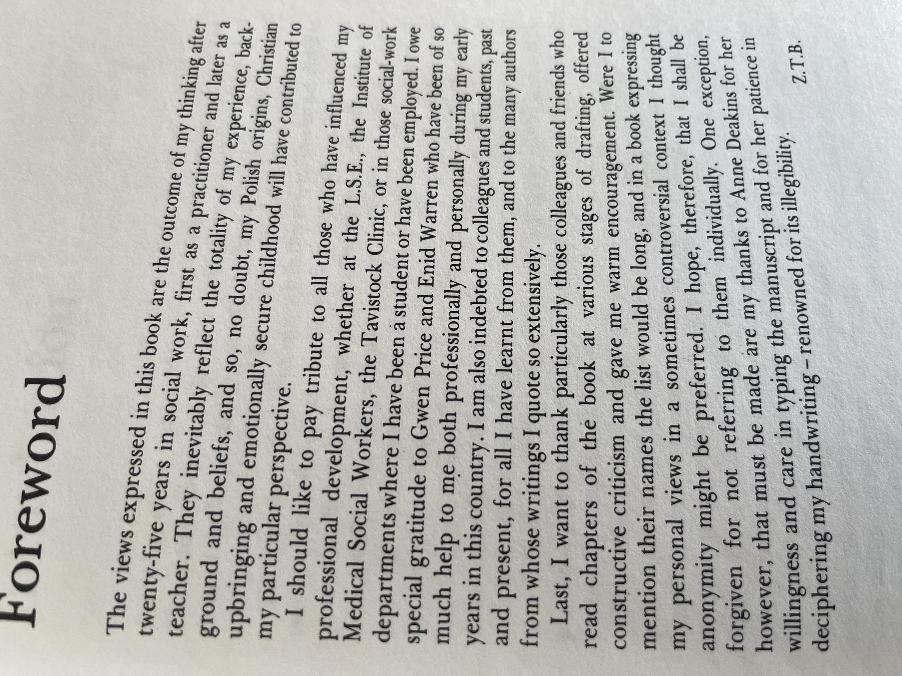

Forward#
The views expressed in this book are the outcome of my thinking after 25 years in medicine, first as a practitioner and later as a teacher. They inevitably reflect the totality of my experience, background, and beliefs, and so, no doubt, my Ugandan origins, Anglican upbringing, and emotionally secure childhood.
– The nature of Social Work, Sofia T. Butrym (Paraphrased to fit my story c. 2024)
{kind=link}
Fig. 11 I read this in 1999 in 1st Year of Medical School. Every word in the paragraph embodied what I was becoming. And in 2024 at the end of my academic career it is almost prophetic, as I transition focus from “self” to “neighbor”, but ultimately “god”.#
<img src="../../figures/zofia-b2.jpeg" style="transform: rotate(90deg);">
Transformation: A Journey Through the Eternal and the Immediate#
Transformation is the thread that runs through existence, the loom on which the fabric of reality is woven. It is at once microscopic and cosmic, biological and metaphysical. We see it in the sculptor’s chisel, in the mutation of genes, in the ascension of a shepherd to a king. It is not simply change—it is metamorphosis, a process by which the essence of a thing is altered, reshaped, and transcended. Everything is transformation.
Take Michelangelo’s David, for instance. It is more than a statue; it is a symbol of transformation in every conceivable sense. The biblical David transforms from a shepherd boy into a warrior, a king, and ultimately a symbol of divine favor and human courage. In Michelangelo’s hands, this transformation acquires yet another layer: the rough block of Carrara marble, abandoned by earlier sculptors as flawed and unwieldy, is reborn as an icon of Renaissance idealism. David becomes not only the hero of Israel but also a symbol of Tuscan resilience and human potential itself. Transformation does not merely occur—it radiates outward, accruing new meanings with each iteration.
Biological Transformation#
On the molecular level, life itself is a symphony of transformations. DNA, the code of life, undergoes transcription and translation to produce proteins, the building blocks of existence. Here, transformation is not just a mechanism—it is the very definition of vitality. The genetic script transforms into the cellular actors that carry out the drama of life, each step bound by precise logic yet bursting with creative potential. Mutations, often dismissed as errors, can become the seeds of evolution, transforming species and ecosystems in ways no single mind could design. Transformation, then, is not simply functional—it is beautiful, a dance between chaos and order that sustains the cosmos.
The Artist as Transformer#
Artists are perhaps the most conscious agents of transformation. They take the raw materials of their world—stone, pigment, sound, language—and transform them into reflections of our shared experience. Michelangelo’s marble becomes David. Shakespeare’s blank verse transforms human folly into immortal tragedy. Historians, too, are transformers, compressing the vastness of time into narratives that we can grasp, shaping collective memory and identity. Even plagiarism, at its laziest, is a form of transformation, albeit one stripped of originality. The difference between artistry and theft is effort: the labor of transforming raw material into something transcendent, something that resonates beyond its original context.
Personal Transformation#
And what of the self? Here lies the most intimate and challenging arena of transformation. Dante’s journey through Inferno, Purgatorio, and Paradiso is not just a journey through realms of the afterlife—it is the story of a soul in transformation, moving from despair to redemption, from exile to illumination. Each step on the path is a crucible, refining Dante’s understanding of love, justice, and divinity. The Divine Comedy resonates because it mirrors the transformations we all undergo: the losses that become wisdom, the struggles that forge character, the fleeting moments of grace that remind us why we endure.
Even in the mundane, transformation is constant. Every interaction with a neighbor, every act of kindness or cruelty, reshapes the world in subtle ways. Cooperative transformations build bridges; adversarial ones test the strength of those bridges. Iterative transformations—those slow, steady refinements—are perhaps the most profound, for they remind us that greatness is not built in a day but in a thousand small, deliberate acts.
Societal and Cosmic Transformations#
On the sociological scale, transformation is the engine of history. Revolutions, whether political, technological, or cultural, are moments when the equilibrium shifts, when what was becomes untenable and something new must emerge. Karl Marx understood transformation as the dialectic of history, a ceaseless struggle between opposing forces that drives society forward. Yet even Marx’s vision is but one lens on a process as old as time itself.
Cosmologically, transformation is the story of the universe. Stars are born, live, and die, their violent ends seeding galaxies with the elements of life. The earth itself is a product of cosmic alchemy, a transformation of star-stuff into a cradle of consciousness. And what of humanity’s future? Are we not also in a state of becoming, striving toward an Übermensch, a higher form of existence that transcends the limitations of the present?
The Divine Transformation#
Finally, there is the transformation that bridges the mortal and the divine. In many traditions, God is not static but dynamic, an eternal becoming. The Christian narrative of incarnation and resurrection is a story of transformation: the infinite becoming finite, the broken becoming whole, death giving way to life. Transformation is the essence of faith, the hope that what is can become what ought to be.
Everything Is Transformation#
Whether we look inward to the psyche, outward to the cosmos, or back through the annals of history, the message is the same: everything is transformation. It is the adversarial tension that propels us forward, the iterative process that refines us, the cooperative harmony that binds us together. It is the journey of a shepherd boy who becomes a king, of a block of marble that becomes a masterpiece, of a flawed world that dreams of redemption.
To live is to transform and be transformed, to shape and be shaped. The question is not whether we will change but how. Will our transformations be acts of creation, of beauty and meaning? Or will they be destructive, a dissolution into chaos? The choice is ours, and in that choice lies the ultimate transformation: from passive participant to conscious co-creator of the world.